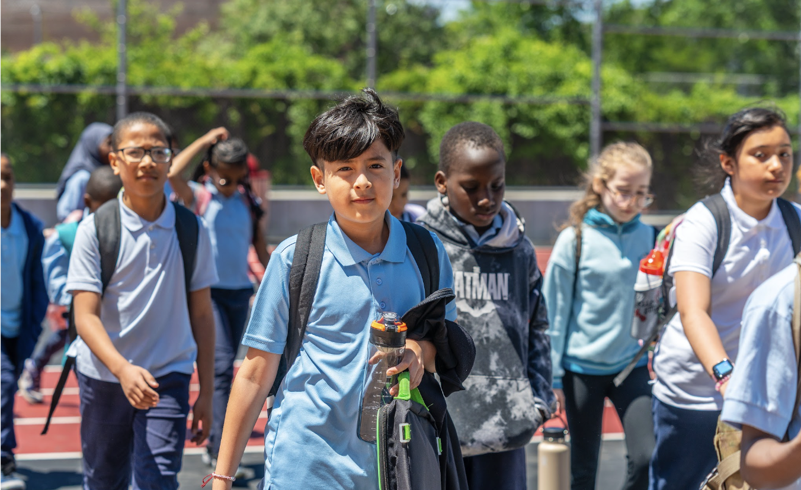
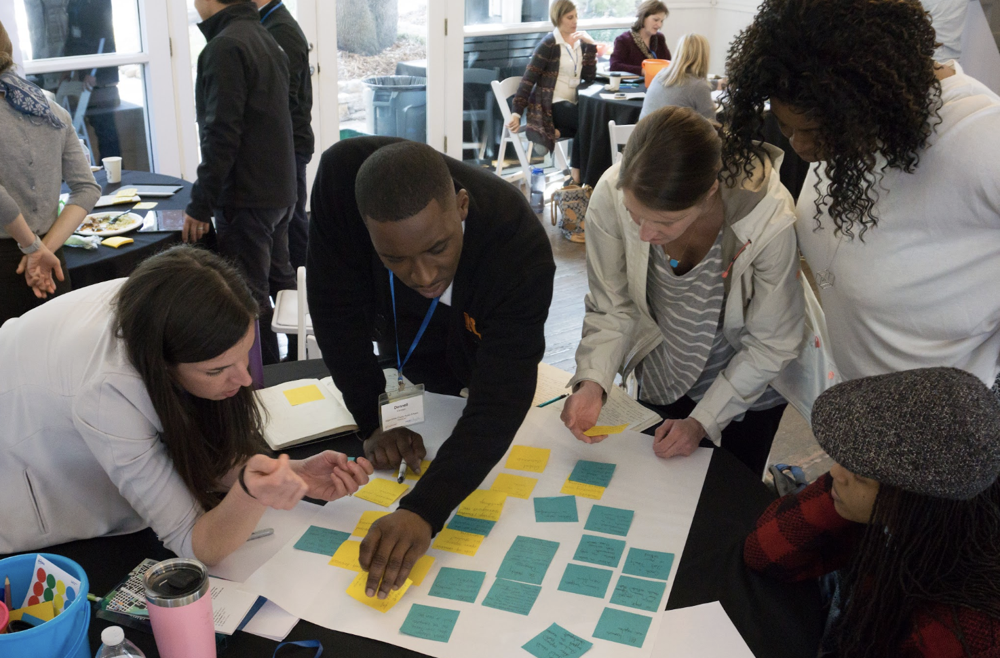
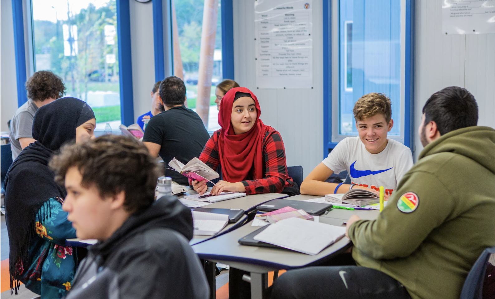
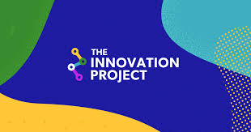

Superintendents
Ready to transform their systems to spark outstanding outcomes and experiences for all kids.
North Carolina has set a goal: the best public education system in the nation by 2030. Achieving that vision will take more than incremental improvement—it will take investing in and supporting the leadership already driving this work forward.
District leadership has never been more consequential or more complex. AI is opening new possibilities for how students learn. Families are demanding more from their schools. And underneath the daily demands of the job is the reason most of you got into this work: a genuine belief that public education can do more for kids than it currently does.

LEAD (Leaders of Excellence, Advocacy and Discovery)
The Institute
North Carolina leaders are already proving better public education is possible. The question is how to accelerate it.
What district leaders need, and rarely get, is space to step back, think differently, and build the skills, relationships, and new knowledge that real redesign requires. That is what this Institute is built to provide.
The NC Innovation Institute is a statewide initiative, co-stewarded by The Innovation Project and Transcend, built for North Carolina leaders who are serious about redesigning public education, not someday, but now.
This is not a traditional leadership program. It is designed around a simple conviction: the leaders closest to students are the ones who will transform public education if we give them the right support, the right peers, and the right infrastructure.

Leadership work that depends on trust, reflection, and shared problem-solving.

Learning environments that make collaboration, agency, and relevance visible.
Who this is for
Ready to transform their systems to spark outstanding outcomes and experiences for all kids.
Eager to lead teams to breakthrough results for learners and their communities.
Who want to govern and oversee systems where all learners thrive.
Who know that bold visions need an infrastructure of innovation and flexible supports to succeed.
What the Institute offers
Hands-on working experiences, not conferences. Three or four times a year, leaders come together to work on real problems and leave with tools, sharper diagnosis, and concrete next steps.
See upcoming conveningsNine months of sustained, peer-based leadership development across role-alike cohorts for superintendents, senior cabinet leaders, and board chairs.
Explore the fellowship tracksPractical, applied learning built around real problems, from community-based design to AI leadership, governance, and more.
Browse all coursesSee what is possible. Change what you think is inevitable. Visits are built around a clear learning purpose, not just a site visit.
See all upcoming inspiration visitsAn ongoing statewide community of NC leaders sharing challenges, exchanging resources, and holding each other accountable, including access to vetted partners.
Learn about the networkThe ongoing, community-rooted work of translating aspiration into changed learning experiences for students, schools, and districts.
Learn how design journeys workWhy this partnership

The Innovation Project brings North Carolina context, trusted relationships, and deep knowledge of the state's districts, communities, and politics.
Transcend brings national expertise in school design, innovative models, research, and a track record of transformative leadership development across hundreds of schools and systems.
They create a practical pathway from inspiration to implementation for leaders who want to redesign public education now.
What leaders are saying
"This Institute is one of the bigger bets I would make to revitalize the effort to transform schools across the U.S."
Wendy Kopp, Founder, Teach For America
"At a time when education leaders face unprecedented challenges, this kind of investment in leadership is exactly what we need."
Melissa Harris, Former Deputy Superintendent, DeKalb County Schools
"Investing in this Institute is a sure bet to produce systemic and sustainable organizational transformation."
Tom Rooney, Former Superintendent, Lindsay Unified School District
Ready to get started?
The Institute works best when participants are fully invested.
Questions? institute@ncinnovationproject.org